Test Accuracy: 0.9328436

 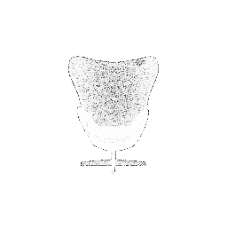
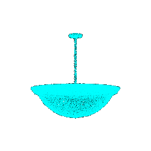
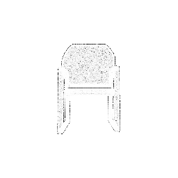
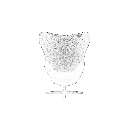
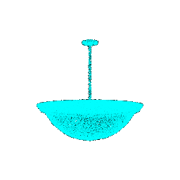
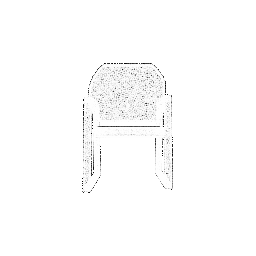


Test accuracy: 0.9328436516264428
Object 609: Predicted Class = 0
Object 361: Predicted Class = 0
Object 495: Predicted Class = 0
Object 887: Predicted Class = 2
Object 294: Predicted Class = 0
Failure Prediction for Class 0: Predicted Class = 2, True Class = 0.0
Failure Prediction for Class 1: Predicted Class = 0, True Class = 1.0
Failure Prediction for Class 2: Predicted Class = 1, True Class = 2.0
Interpretation: It is able to predict ladder as a chair all because of it's 4 legs as seen in the model However, the ladder belongs to a different class and due to similar features like the legs of the chair It considers the object as a chair and not like a ladder.

Interpretation: The vase presented as table cot may be due to the reason of points placed in a particular sequence just as table and this is turning the prediction towards table as vase.


Interpretation: It considers globe as lamp since due to the quite similar similar shapes or appearance from certain viewpoints. Thus, it misclassifies these instances where the distinguishing features are not prominent across classes.
 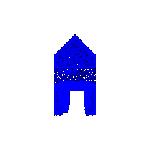
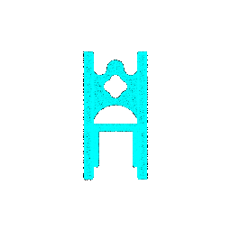
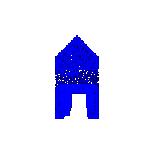
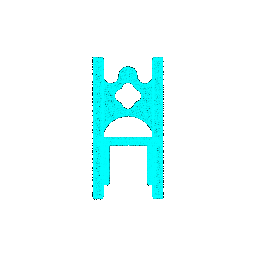


Prediction accuracy:0.9085
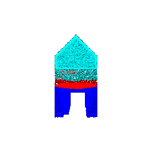Prediction accuracy: 0.8687

Prediction accuracy: 0.9543
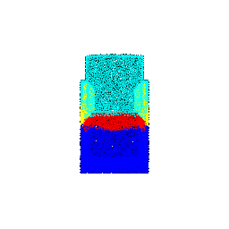Prediction accuracy: 0.8812
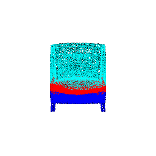Prediction accuracy: 0.567
A segmentation model, loads a pre-trained checkpoint, and evaluates its performance on randomly selected objects from a test dataset. For each object, it selects a subset of points, makes predictions, calculates accuracy, and visualizes the segmentation results in terms of ground truth and predicted labels. The accuracy metrics demonstrate the model's effectiveness in segmenting objects from the point cloud data, and the visualization provides insights into the segmentation quality for each selected object. The random selection of objects allows for a diverse assessment of the model's generalization capabilities.